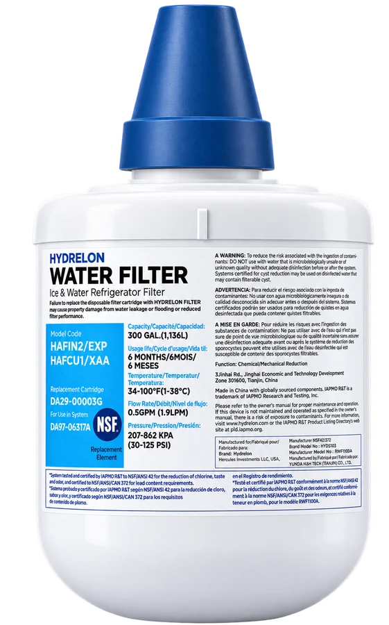

HYDRELON HYDS103
Replacement ice & water filter that reduces chlorine taste and odor, for cleaner-tasting water and ice from your refrigerator.
- Replacement cartridgeDA29-00003G
- For use in systemDA97-06317A
- ReducesChlorine, taste & odor
- Replace every6 months or 300 gallons, whichever comes first
Before ordering, check that the part number on your current filter matches. Part numbers are shown for compatibility reference only; HYDRELON is not affiliated with any refrigerator manufacturer.
Questions or orders: info@hydrelon.com
Specifications
| Brand model | HYDS103 |
|---|---|
| Manufacturer model | RWF1100A |
| Type | Ice & water refrigerator filter |
| Replacement cartridge | DA29-00003G |
| For use in system | DA97-06317A |
| Function | Chemical / mechanical reduction |
| Reduction claims | Chlorine, taste & odor |
| Rated capacity | 300 gallons (1,136 L) |
| Usage life | 6 months |
| Rated flow | 0.5 gpm (1.9 L/min) |
| Operating temperature | 34–100 °F (1–38 °C) |
| Operating pressure | 30–125 psi (207–862 kPa) |
Manufacturer model RWF1100A is listed by IAPMO R&T as certified to NSF/ANSI 42 for chlorine, taste and odor reduction (IAPMO R&T file W-11150). Specifications are taken from the product label.
Replacing the filter
Replace the cartridge every 6 months or after 300 gallons, whichever comes first. Follow the installation and maintenance steps in your refrigerator’s owner’s manual.
Failing to replace the disposable filter cartridge may cause property damage from water leakage or flooding, or reduced filter performance.
Warning
To reduce the risk associated with the ingestion of contaminants: do not use with water that is microbiologically unsafe or of unknown quality without adequate disinfection before or after the system. Systems certified for cyst reduction may be used on disinfected water that may contain filterable cysts.
If this device is not maintained and operated as specified in the owner’s manual, there is a risk of exposure to contaminants.
FAQ
Will it fit my refrigerator?
It replaces cartridge DA29-00003G in system DA97-06317A. Check the part number printed on your current filter or in your refrigerator’s manual; if it matches, this filter fits.
What does it filter?
It reduces chlorine taste and odor in the water and ice your refrigerator dispenses. It is not intended to make unsafe water safe — see the warning above.
How often should I change it?
Every 6 months or after 300 gallons, whichever comes first.
Where is it made?
Made in China with globally sourced components, manufactured for Hercules Investments LLC, USA.